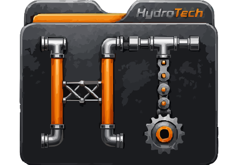

Información centralizada
Mangueras hidráulicas, cilindros hidráulicos y piezas fabricadas en torno, todo en un solo lugar y con su historial.

HydroTechInnovación industrialHydroTech es la app móvil que reemplaza cuadernos y hojas de cálculo con fichas técnicas de mangueras, cilindros y piezas de maquinaria pesada.
Suscríbete para recibir novedades, consejos y noticias del sector industrial.
HydroTech es una aplicación móvil para identificar, registrar y consultar la información técnica de componentes hidráulicos y metalmecánicos de maquinaria pesada y del sector industrial. Cada componente tiene su ficha con medidas, características, fotos y planos, para que ninguna medida se pierda en un cuaderno o en una hoja de cálculo.
La plataforma funciona para varias empresas a la vez y organiza el acceso por roles: administrador, supervisor y técnico.
Mangueras hidráulicas, cilindros hidráulicos y piezas fabricadas en torno, todo en un solo lugar y con su historial.
Asigna trabajos, adjunta evidencias y sigue el estado de cada orden desde el celular.
Cada persona ve solo lo que le corresponde, con registro de auditoría de los cambios.
Recibe avisos y genera reportes para tomar decisiones con datos reales de tu maquinaria.
Consulta en lenguaje natural la información que ya registraste de tus componentes.
Una interfaz clara para trabajar en campo, en el taller o en la planta.
HydroTech está en su primera versión beta. Suscríbete con tu correo y te avisaremos de cada novedad y lanzamiento.
Mangueras hidráulicas, cilindros hidráulicos y piezas metalmecánicas fabricadas en torno, además de la maquinaria y los vehículos a los que pertenecen.
Sí. HydroTech maneja empresas cliente y usuarios con tres roles: administrador, supervisor y técnico.
Solo lo usaremos para enviarte información de HydroTech. Tu información estará protegida.
Conoce el logotipo, los colores y la tipografía de HydroTech en la guía de marca e identidad visual.